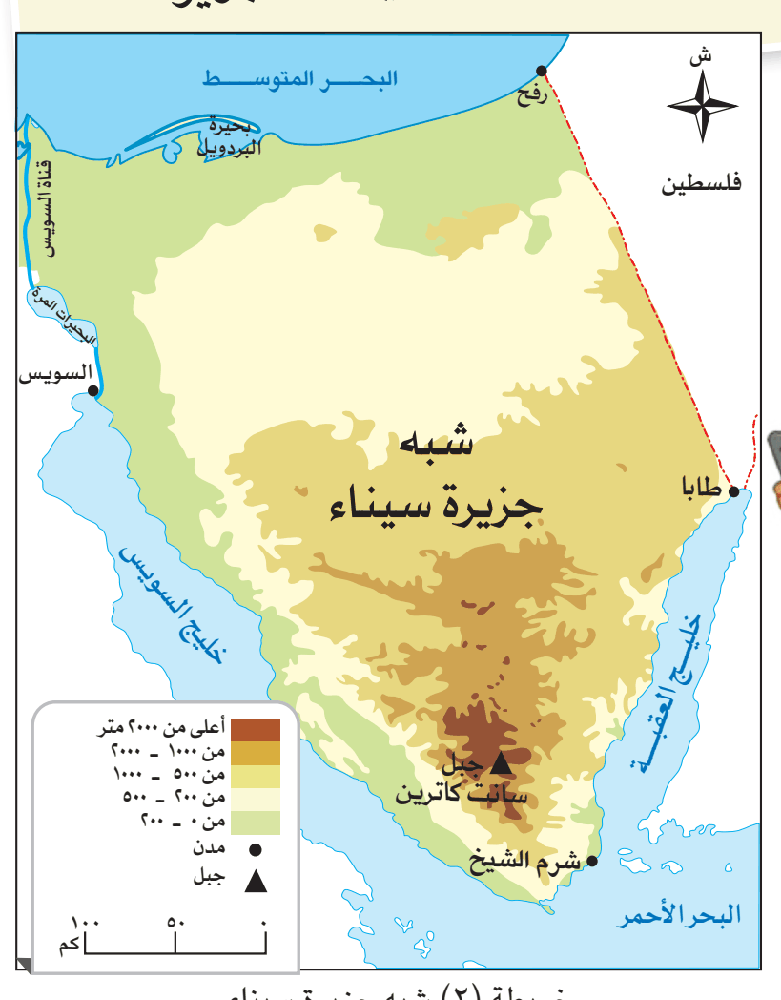

الوحدة الثالثة: مصر وطننا • الجزء الثاني
التضاريس: هي شكل سطح الأرض بما يضمه من مرتفعات وسهول ومنخفضات. وتتميز مصر بتنوع تضاريسي مذهل يجمع بين الجبال الشاهقة، والهضاب، والسهول الخصبة، ونهر النيل الخالد، والبحار والمنخفضات.

| الشكل التضاريسي | التعريف الجغرافي | أهم الأمثلة في مصر |
|---|---|---|
| الجبل (Mountain) | أرض شديدة الارتفاع تزيد عن 1000 متر، ولها قمة وجوانبها شديدة الانحدار. | • جبل سانت كاترين (أعلى قمة جبلية في مصر بجنوب سيناء). • جبال البحر الأحمر (في الصحراء الشرقية). • جبل العوينات (جنوب غرب مصر). |
| الهضبة (Plateau) | مساحة واسعة من الأرض المرتفعة، وسطحها مستوٍ أو شبه مستوٍ. | • هضبة الجلف الكبير (بالصحراء الغربية). • هضبة التيه (بشبه جزيرة سيناء). |
| التل (Hill) | أرض مرتفعة قليلاً، ولها قمة يقل ارتفاعها عن 1000 متر. | • تلال المقطم (بمحافظة القاهرة). |
| السهل الفيضي | مساحة من الأرض مستوية قليلة الارتفاع، تكونت من طمي الأنهار وتربتها خصبة. | • سهول وادي النيل والدلتا (تقوم عليها الزراعة). |
| السهل الساحلي | مساحة من الأرض مستوية تمتد على طول سواحل البحار. | • سهول سواحل البحر المتوسط والبحر الأحمر. |
| المنخفض | أرض منخفضة عما حولها تحت مستوى سطح البحر. | • منخفض القطارة (بالصحراء الغربية). |
| الظاهرة الجغرافية | التعريف العلمي | أبرز الأمثلة في مصر |
|---|---|---|
| الجزيرة (Island) | أرض تحيط بها المياه من جميع الجهات (4 جهات). | جزيرة شدوان في البحر الأحمر. |
| شبه الجزيرة (Peninsula) | أرض تحيط بها المياه من ثلاث جهات فقط. | شبه جزيرة سيناء (بوابة مصر الشرقية). |
| البحيرة (Lake) | مساحة صغيرة من الماء يحيط بها اليابس من جميع الجهات. | • بحيرة ناصر (عذبة). • بحيرة البرلس والبردويل (مالحة). |

| اللون على الخريطة | المدلول التضاريسي والجغرافي |
|---|---|
| اللون البني (داكن وفاتح) | يدل على المناطق الأكثر ارتفاعاً (الجبال العالية كسانت كاترين، والتلال والهضاب). |
| اللون الأصفر | يدل على المناطق متوسطة الارتفاع والرمال والصحاري. |
| اللون الأخضر (داكن وفاتح) | يدل على السهول المنبسطة الخصبة (الأخضر الفاتح للسهول الفيضية، والأخضر الداكن للمنخفضات). |
| اللون الأزرق | يدل على المسطحات المائية (البحار، نهر النيل، والبحيرات والخلجان). |
( أ- الأخضر | ب- البني | جـ- الأزرق | د- الأصفر )
( أ- التيه | ب- الجلف الكبير | جـ- المقطم | د- سانت كاترين )
( أ- البحر الأحمر | ب- نهر النيل | جـ- البحر المتوسط | د- الرياح )
( أ- قارون | ب- البرلس | جـ- ناصر | د- إدكو )
( أ- 1000 متر | ب- 2000 متر | جـ- 3000 متر | د- 500 متر )
الإجابة: ................................................................................................................................................................................
الإجابة: ................................................................................................................................................................................
الإجابة: ................................................................................................................................................................................
1- الجبل (Mountain) (ارتفاعه أكثر من 1000 متر وله قمة شديدة الانحدار).
2- الجزيرة (Island) (اليابس المحاط بالمياه من جميع الجهات كشدوان).
3- شبه الجزيرة (Peninsula) (اليابس المحاط بالمياه من ثلاث جهات فقط كسيناء).
4- جبل سانت كاترين (أعلى قمة في مصر ويصل ارتفاعه لأكثر من 2600 متر).
5- المنخفض (مثل منخفض القطارة) (أرض هابطة تحت مستوى سطح البحر).
(1) ب- البني | اللون القياسي العالمي لتمثيل الجبال والمرتفعات.
(2) ب- الجلف الكبير | تقع في أقصى جنوب غرب الصحراء الغربية لمصر.
(3) ب- نهر النيل | طمي النيل الخصيب هو أساس وادي النيل والدلتا.
(4) جـ- بحيرة ناصر | تكونت خلف السد العالي بأسوان وتخزن المياه العذبة.
(5) أ- 1000 متر | التل يقل ارتفاعه دائماً عن 1000 متر بينما الجبل يزيد.
(1) ( ✗ ) خطأ. التصويب: سيناء شبه جزيرة لأن المياه تحيط بها من ثلاث جهات فقط.
(2) ( ✓ ) صواب. الأخضر الداكن للمنخفضات، والأخضر الفاتح للسهول.
(3) ( ✓ ) صواب. مثل هضبة الجلف الكبير وهضبة التيه.
(4) ( ✗ ) خطأ. التصويب: يقع جبل سانت كاترين في جنوب شبه جزيرة سيناء.
(5) ( ✓ ) صواب. السهول الساحلية تمتد مباشرة على شواطئ البحار.
السؤال الرابع: (1) الأزرق | (2) الجزيرة.
السؤال الخامس (بم تفسر):
(1) لأن المياه تحيط بها من ثلاث جهات فقط (البحر المتوسط شمالاً، وخليج السويس غرباً، وخليج العقبة والبحر الأحمر شرقاً)، بينما تتصل باليابس غرباً.
(2) لأنها تتميز بتربة خصبة جداً غنية بطمي النيل، مما جعلها صالحة لقيام حرفة الزراعة واستقرار ملايين السكان عليها عبر التاريخ.
السؤال السادس (ماذا يحدث إذا):
(1) سيصعب تماماً التمييز بين الجبال والبحار والسهول والصحاري، ولن نتمكن من قراءة وفهم تضاريس الخريطة إطلاقاً.